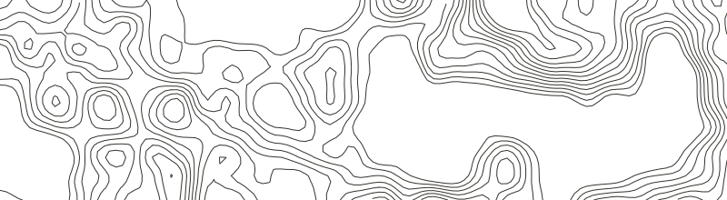
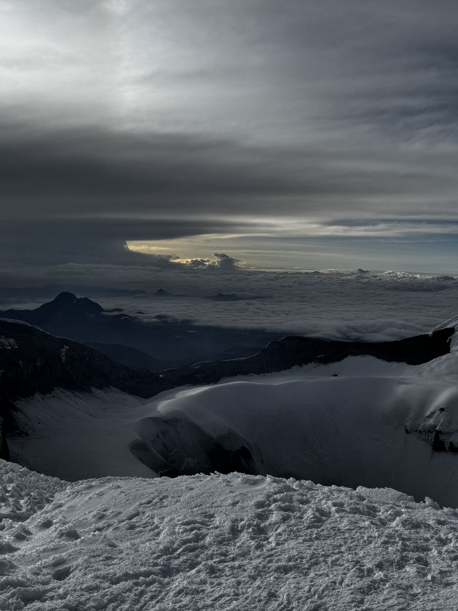

May 24, 2026
Mount Shasta via Bunny Flat · Shasta-Trinity, California
- Summit
- 14,179 ft4,322 m
- Gain
- 7,229 ft2,203 m
- Distance
- 11 mi17.7 km

Spontaneous Spring Ski Shasta in Shorts! Here’s a rare Strava post.
 M.Y.
M.Y.

Some recent highlights.
May 24, 2026
Spontaneous Spring Ski Shasta in Shorts! Here’s a rare Strava post.
March 27, 2026


Legendary Chamois run on a whiteout day. Not hoodie skiing weather.
December 21, 2025

Rappelled (my first time) 150 ft into a canyon. Erased my fear of heights and temporarily erased my food-poisoning-induced fever.
December 20, 2025



Very hard to breathe up here (53% lower oxygen).
October 25, 2025


September 18, 2025

5 hour summit speed run. Fractured my big toe 2 hours in and somehow still made it.
August 30, 2025


Condensed a 2 day backpacking trip into 23 hours because we only had enough cash for one night of parking. A taste of heat exhaustion.